| Ci-dessous, dans l'Yonne, le 22 octobre 2009, voici : Senecio inaequidens DC., 1838, séneçon du Cap, séneçon de Mazamet, séneçon à dents inégales, séneçon à feuilles étroites, |
| une plante annuelle compétitive dans les milieux ouverts perturbés. De la Famille des Asteraceae (Compositae), sous-famille des Asteroideae, tribu des Senecioneae, les Français la nomment Séneçon du Cap ou séneçon sud-africain, séneçon à dents inégales ou séneçon à feuilles étroites et même séneçon d'Harvey. |
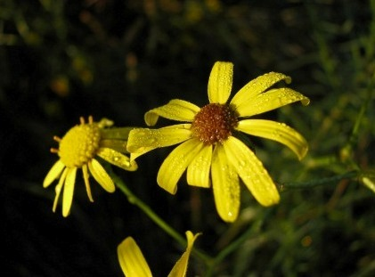 |
Comme d'autres séneçons :
|
| C'est dans les années 1930 que ce séneçon est arrivé dans le département du Tarn, plus précisément aux alentours de Mazamet, dans la vallée de l’Arnette, où le délainage des peaux de mouton était l’activité principale. C’est dans cette vallée que des graines, en provenance d’Afrique du Sud, auraient sans doute été introduites après une opération de lavage ou de façonnage des peaux. Ou bien des graines de ce Séneçon se seraient échappées des toisons lainières importées lors de leur transport entre Port-la-Nouvelle et Mazamet, se répandant le long des routes, puis des rivières et prenant racine dans les terrains en friche. Depuis lors, Senecio inaequidens est présent sur l’ensemble du territoire français, comme dans les Hauts-de-Seine par exemple, et dans l'Yonne peut-être moins qu'ailleurs. Sa floraison peut durer toute l'année entrainant la production de graines en très grand nombre (plus de 10 000 par pied), avec une préférence pour le Printemps et l'Automne. C'est le vent qui dissémine ses akènes sur de longues distances. |
A | Aegonychon purpurocaeruleum | | Alliaria petiolata | | Alopecurus geniculatus | | Andryala integrifolia | | Anemone nemorosa | | Anemone ranunculoides | | Anemone sylvestris | | Anthyllis vulneraria | | Arabidopsis thaliana | B | Baldellia ranunculoides | | Berberis vulgaris | C | Calepina irregularis | | Cardamine heptaphyla | | Cephalanthera damasonium | | Cephalanthera rubra | | Cerastium fontanum | | Corrigiola littoralis | | Corydalis solida | D | Draba verna | E | Eranthis hyemalis | G | Gratiola officinalis | I | Impatiens capensis | L | Lathraea squamaria | Linum leonii | N | Neslia paniculata | O | Ophrys aranifera | Orchis purpurea | |Orchis simia | P | Polygonatum odoratum | | Pulsatilla vulgaris | Pyrola chlorantha | R | Ranunculus gramineus | S | Senecio inaequidens | | Serratula tinctoria | | Spergularia marina | T | Tragus racemosus | Trinia glauca | |
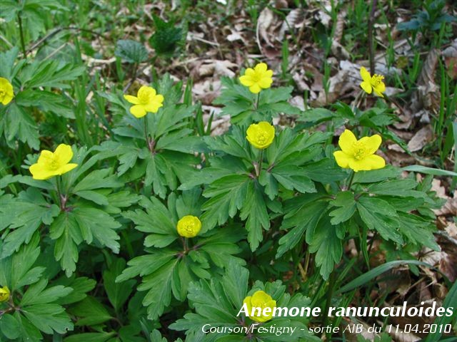 Anémone fausse-renoncule Pour en savoir plus |
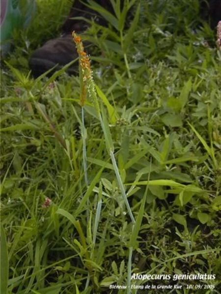 Alopecurus geniculatus L., 1753 - Vulpin genouillé Poacée de la sous-famille des Pooideae et de la tribu des Aveneae Sortie AIB, Bléneau - Etang de la Grande Rue, 10 septembre 2005 Dans l'Yonne c'est une plante vivace, rare, des mares, fossés, bords d'étangs. |
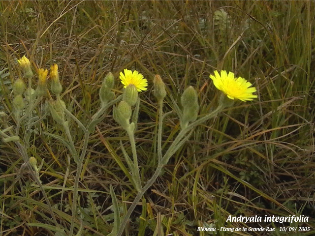 Andryale à feuilles entières, andryale à feuilles entières sinueuse, andryale sinueuse Pour en savoir plus |
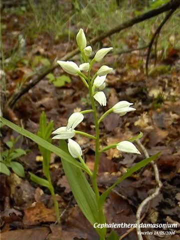 Céphalanthère à grandes fleurs, helléborine blanche Pour en savoir plus |
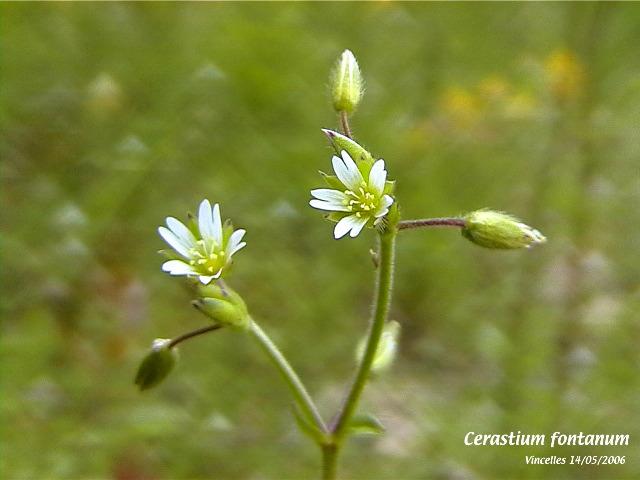 Céraiste commune Caryophyllaceae de la tribu des Alsineae |
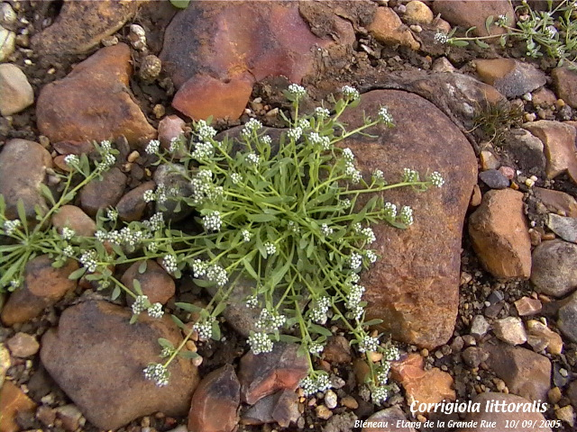 Caryophyllaceae de la tribu des Corrigioleae en 2026 Corrigiole des grèves, courroyette des sables Pour en savoir plus |
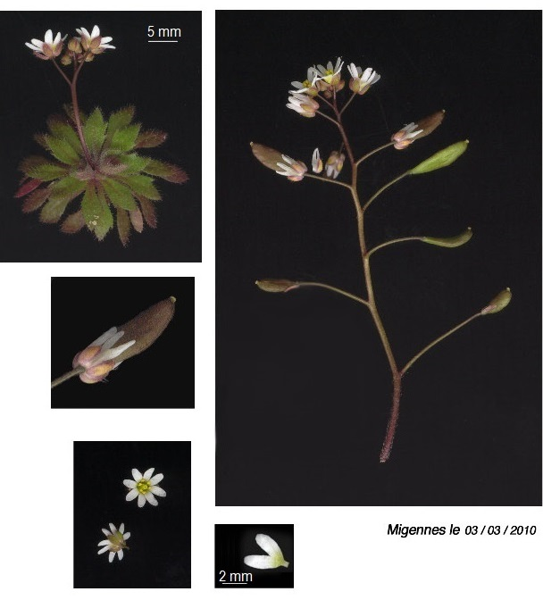 Draba verna, Drave printanière Pour en savoir plus |
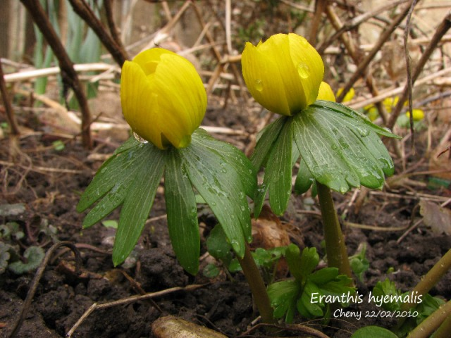 Éranthe d'hiver, ellébore d'hiver Une plante possédant des substances actives comme les chromones et les coumarines recherchées par l'industrie pharmaceutique. |
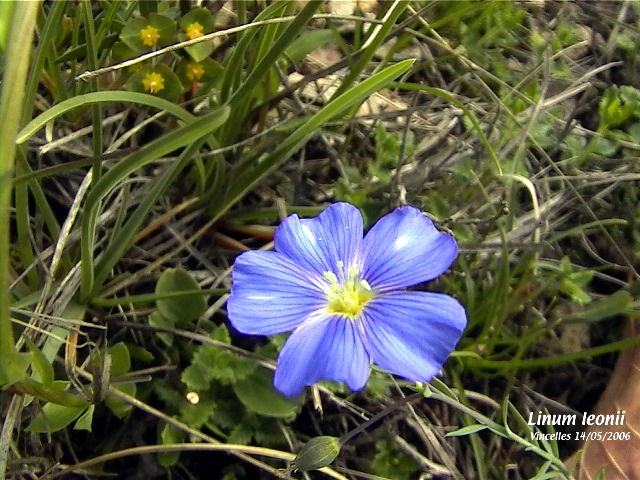 Lin français, lin des Alpes |
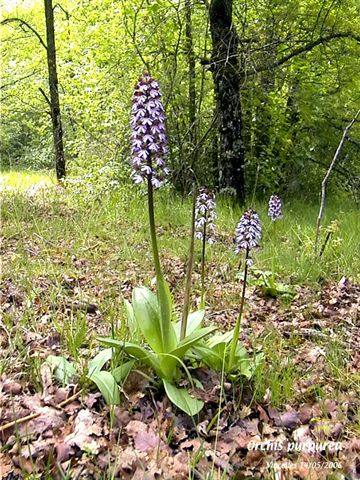 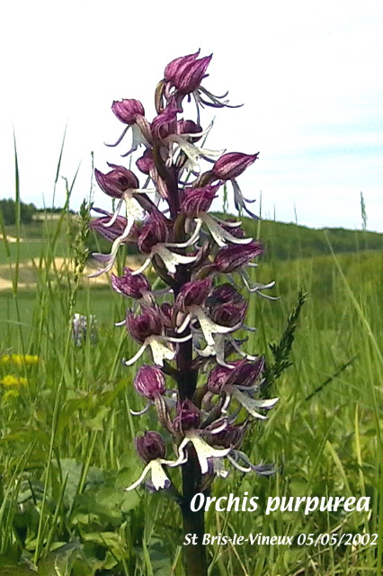 Orchis pourpre Pour en savoir plus |
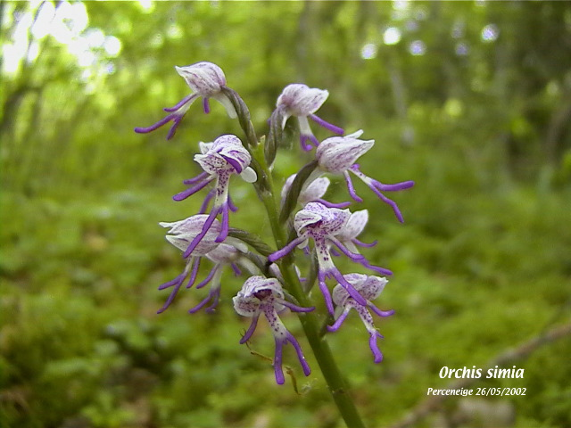 Orchis singe Pour en savoir plus |
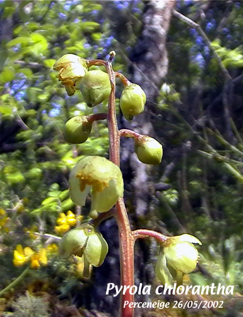 Pyrola chlorantha Sw, 1810 Pyrole verdâtre, pirole à fleurs verdâtres, une Ericacée de la sous-famille des Monotropoideae Le nom de genre Pyrola avait été repris par Linné dans son Species plantarum. Combinaison du mot latin pirus (poirier) ou pirum (poire) et du suffixe diminutif -ola (signifiant petit), le nom de ce genre signifie donc "petite poire" en raison de la forme arrondie et ovale des feuilles qui ressemblent à des feuilles de poirier miniatures, notamment celles de Pyrola rotundifolia. |
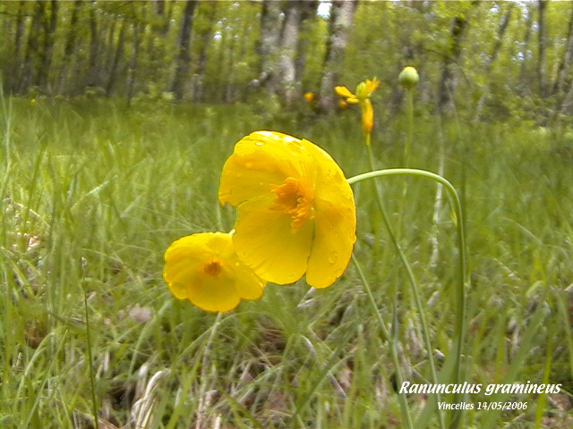 Renoncule graminée, renoncule à feuilles de graminée |
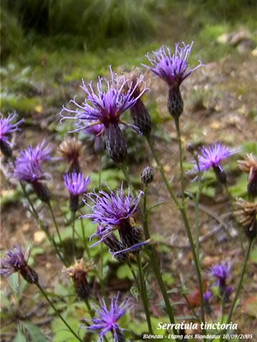 Serratule des teinturiers, sarrette Pour en savoir plus |
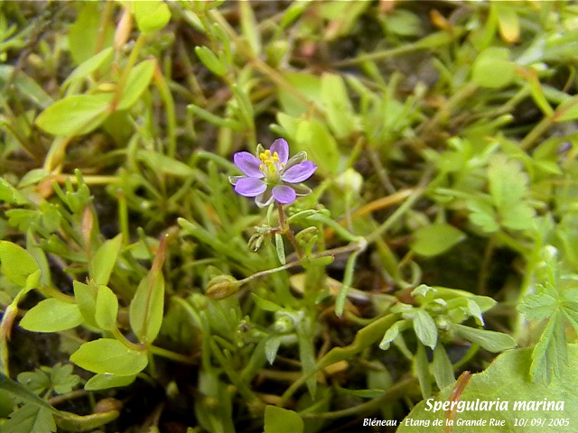 Spergularia marina (L.) Besser, 1822 Spergulaire du sel Ordre des Caryophyllales, famille des Caryophyllaceae, tribu des Sperguleae |
{kind=link}